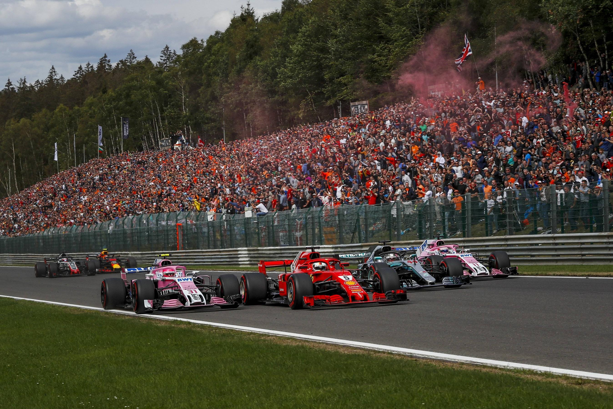
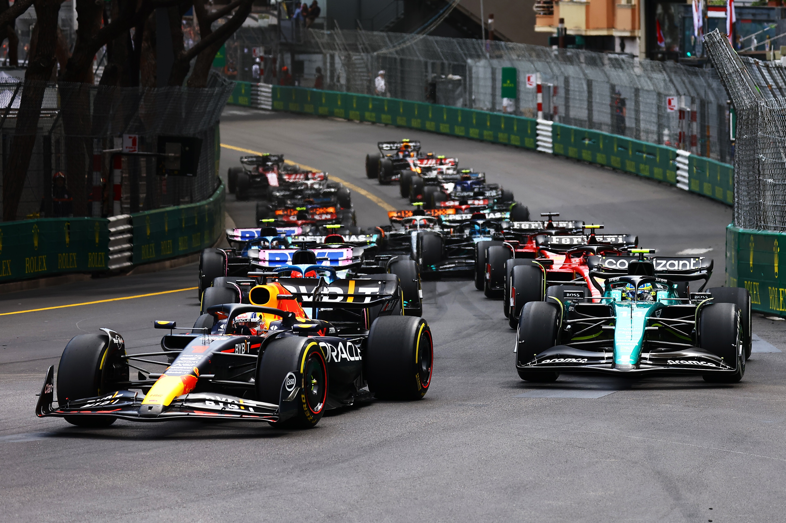
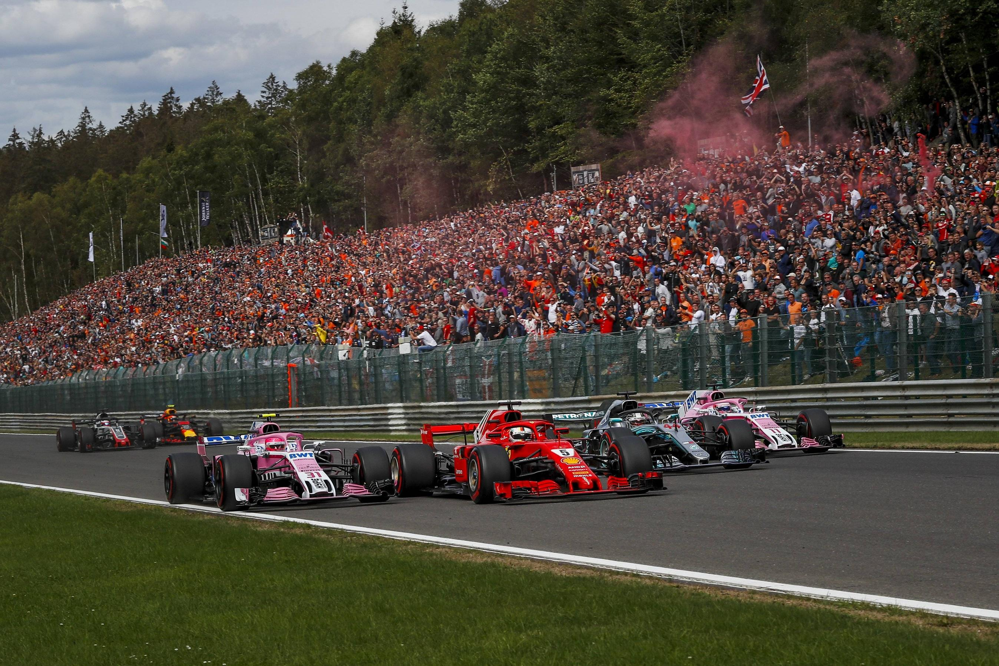
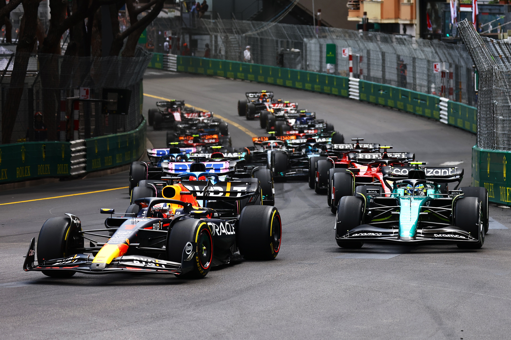

F1, or Formula 1, is the highest class of international single-seater, open-wheel auto racing, known as the
pinnacle of motorsport, featuring fast, technologically advanced cars and global Grand Prix events sanctioned by
the FIA, where drivers compete for individual and team championships. The "formula" refers to the strict rules
cars must follow, and a season includes races worldwide, combining incredible speed with complex strategy.
A total of 10 teams and 20 drivers from around the world make up the current Formula 1 grid, with each squad
fielding two cars.
Driver experience ranges from multiple World Champions like Lewis Hamilton, Max Verstappen and Fernando Alonso,
to rookie racers in their first full-time F1 seasons such as Kimi Antonelli, Oliver Bearman and Gabriel
Bortoleto.
When it comes to teams, there are those who have been in Formula 1 since the early years, such as Ferrari
(competing continuously since the very first season in 1950) and McLaren, and relative newcomers like Haas who
entered the sport ahead of the 2016 season.
A total of 24 races in 21 countries across five continents are included on the Formula 1 calendar. Classic
circuits such as Silverstone, Spa-Francorchamps and Suzuka, combined with more recent additions including Las
Vegas, Miami and Saudi Arabia, give an exciting and varied selection of tracks.
Monaco, Monza, Silverstone and Spa are circuits that still feature on the schedule from the very first F1 season
in 1950, although plenty of safety-based changes and track layout modifications have been made since then.

 


